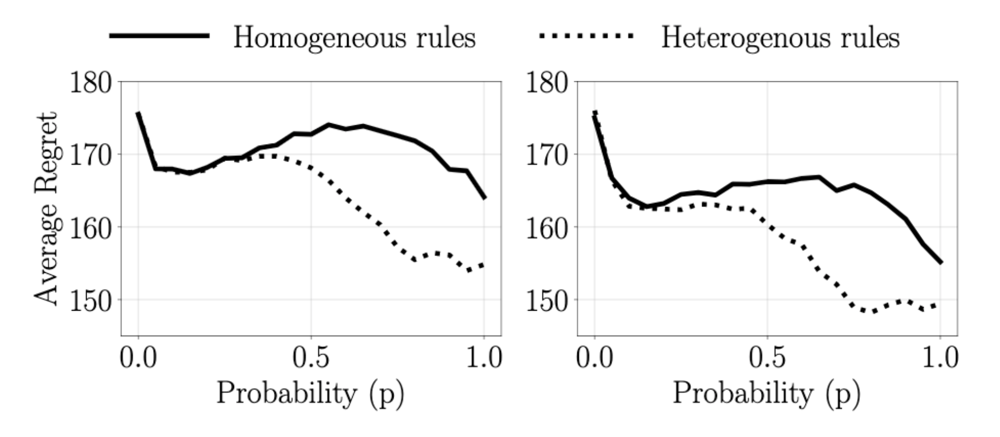

Overview
We investigate the benefits of heterogeneity in multi-agent explore-exploit decision making where the goal of the
agents is to maximize cumulative group reward. To do so we study a class of distributed stochastic bandit problems
in which agents communicate over a multi-star network and make sequential choices among options in the same
uncertain environment. Typically, in multi-agent bandit problems, agents use homogeneous decision-making
strategies. However, group
performance can be improved by incorporating heterogeneity into the choices agents make, especially when the
network graph is irregular, i.e. when agents have different numbers of neighbors. We design and analyze new
heterogeneous explore-exploit strategies, using the multi-star as the model irregular network graph. The key idea
is to enable center agents to do more exploring than they would do using the homogeneous strategy, as a means of
providing more useful data to the peripheral agents.
In the case all agents broadcast their reward values and choices to their neighbors with the same probability, we
provide theoretical guarantees that group performance improves under the proposed heterogeneous strategies as
compared to under homogeneous strategies.

Average expected cumulative group regret for 36 agents at time \(t=1000\) as a function of broadcasting
probability \(p\) with communication over a symmetric multi-star graph. Left corresponds to 2 center and 34
peripheral agents. Right corresponds to 3 center and 33 peripheral agents. Dotted lines and solid line shows
average regret when agents use heterogeneous and homogeneous sampling rules, respectively
Bibtex
@article{madhushani2020multiStar,
title={Heterogeneous Explore-Exploit Strategies on Multi-Star Networks},
author={Madhushani, Udari and Leonard, Naomi Ehrich},
journal={under review},
year={2020}
}